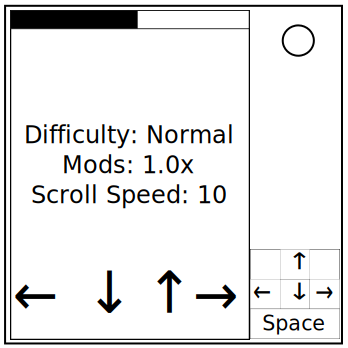

On the Subject of Quaver
insert flavor text
- This module has a screen and arrow key cluster.
- To solve this module, fill the top bar.
Mod select
The module will start in the mod selection screen.
There are 3 different modifiers which the defuser can freely customize.
- Speed: Rate of the notes falling. (1.0x-2.0x)
- Difficulty: Difficulty of patterns. (Normal, Hard, Insane, Expert)
- Per Column: Require keeping track of each individual column. (On/Off)
The left and right arrow keys adjusts the currently selected modifier.
Pressing the up and down arrow keys will scroll between the modifiers.
To enter gameplay, press down past the bottom option.
Gameplay
The module will start in the mod selection screen.
There are 3 different modifiers which the defuser can freely customize.
The left and right arrow keys adjusts the currently selected modifier.
Pressing the up and down arrow keys will scroll between the modifiers.
To enter gameplay, press down past the bottom option.
|
|
1 |
2 |
3 |
4 |
5 |
6 |
7 |
8 |
9 |
10 |
11 |
12 |
|
|
13 |
14 |
15 |
16 |
17 |
18 |
19 |
20 |
21 |
22 |
23 |
24 |
|
|
25 |
26 |
27 |
28 |
29 |
30 |
31 |
32 |
Note Sequence |
|
|
*4-beat anacrusis = Four unstressed notes played for the Defuser to get a sense of the rhythm before the module starts tracking user input.